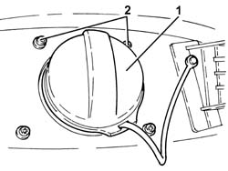
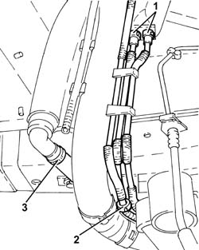
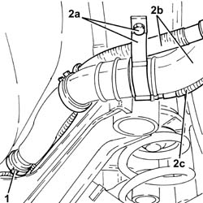
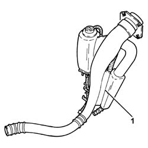
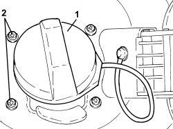
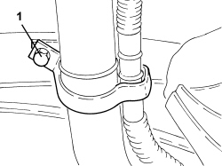
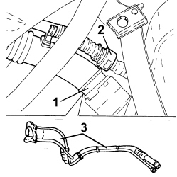

1040A30 FUEL FILLER PIPE ASSEMBLY- R + R
- Path
- Procedures > 10 ENGINE > 1040 FUEL TANK AND PIPES > 1040A FUEL TANK AND COMPONENTS > 1040A30 FUEL FILLER PIPE ASSEMBLY- R + R
- Kind
- repair procedure (removal / refitting; the operation number is the code)
- Applies to
- all engines; all production periods
- Interactive page
- https://sloeber94.github.io/elrnDB-fCrm/en/#/194000288
Applies to: engines: 1.8, 2.2; all production periods
 Removing
Removing
 Refitting
Refitting- Position the vehicle on a lift.
- Make sure that the ignition key is in the OFF position, then disconnect the battery terminal (-).
Description | Connector | |
|---|---|---|
- | Battery |
Op. 4450B08 RIGHT REAR WHEEL - R.R
Op. 7055B45 RIGHT REAR WHEEL ARCH LINER - R.R
1. Remove the fuel filler pipe cap.
2. Undo the bolts fixing the fuel filler pipe to the bodyshell.
- Draw off the fuel from the tank using a suitable tool and protection in line with current safety regulations.

Applies to: engines: 1.8, 2.2; all production periods
1. Disconnect the rapid connectors for the fuel vapour recovery pipes from the multi-purpose valves, fuel vapour separator side (incorporated in the fuel filler pipe).
2. Disconnect the rapid connector joining the fuel vapour pipe to the active charcoal filter.
3. Loosen the band and disconnect the reflux pipe.

Applies to: engines: 1.8, 2.2; all production periods
1. Loosen the band securing the fuel filler pipe to the tank.
2. Open the bands (2a) and release the fuel vapour pipes (2b) and the reflux pipe (2c) from the fuel filler pipe.

Applies to: engines: 1.8, 2.2; all production periods
1. Remove the fuel filler pipe assembly.

Applies to: engines: 1.8, 2.2; all production periods
Refitting
Removing- Place the fuel filler pipe assembly in its housing.
- Fasten the fuel vapour pipes and the reflux pipe to the fuel filler pipe using the bands.
- Tighten the band securing the fuel filler pipe to the tank.
- Connect the reflux pipe and tighten the band.
- Connect the rapid connector joining the fuel vapour pipe to the active charcoal filter.
- Connect the rapid connectors for the fuel vapour recovery pipes to the multi-purpose valves, fuel vapour separator side.
- Tighten the bolts fixing the fuel filler pipe to the bodyshell.
- Place the fuel filler pipe cap in its housing.
Op. 7055B45 RIGHT REAR WHEEL ARCH LINER - R.R
Op. 4450B08 RIGHT REAR WHEEL - R.R
- Connect the negative battery terminal.
- Refill the fuel system.
- Check that there are no leaks from the fuel system.
- Remove the vehicle from the lift.
Applies to: engines: 1.9 JTD 8v, 1.9 JTD 16v, 2.4 JTD 20v; all production periods
Removing
Refitting- Position the vehicle on a lift.
- Make sure that the ignition key is in the OFF position, then disconnect the battery terminal (-).
Op. 4450B08 RIGHT REAR WHEEL - R.R
Op. 7055B45 RIGHT REAR WHEEL ARCH LINER - R.R
1. Remove the fuel filler pipe cap.
2. Undo the bolts fixing the fuel filler pipe to the bodyshell.
- Draw off the fuel from the tank using a suitable tool and protection in line with current safety regulations.

Applies to: engines: 1.9 JTD 8v, 1.9 JTD 16v, 2.4 JTD 20v; all production periods
1. Undo the bolt securing the collar.

Applies to: engines: 1.9 JTD 8v, 1.9 JTD 16v, 2.4 JTD 20v; all production periods
1. Loosen the band securing the fuel filler pipe to the tank.
2. Disconnect the breather pipe from the intermediate connector.

Applies to: engines: 1.9 JTD 8v, 1.9 JTD 16v, 2.4 JTD 20v; all production periods
Refitting
Removing- Place the fuel filler pipe assembly in its housing.
- Connect the breather pipe to the intermediate connector.
- Tighten the bolt securing the collar.
- Tighten the bolts fixing the fuel filler pipe to the bodyshell.
- Place the fuel filler pipe cap in its housing.
Op. 7055B45 RIGHT REAR WHEEL ARCH LINER - R.R
Op. 4450B08 RIGHT REAR WHEEL - R.R
- Connect the negative battery terminal.
- Refill the fuel system.
- Check that there are no leaks from the fuel feed system.
- Remove the vehicle from the lift.
Topics linked from this page (3)
Topics that link to this page (7)
- 1040A10 FUEL TANK - R + R AND DECANT FUEL
- 1040A14 FUEL TANK - R + R FOR REPLACEMENT
- 1040B36 REAR FUEL DELIVERY LINE - R.R
- 1080E10 TANK FUEL VAPOUR SEPARATOR - R + R
- 1080E20 ACTIVE CARBON FILTER FOR FUEL VAPOURS - R + R
- 3340B69 RIGID PIPE FROM LEFT RER BRAKE CONNECTOR - R.R.
- 3340B71 INTERMEDIATE RIGID PIPING FITTING, LH REAR BRAKE - R R